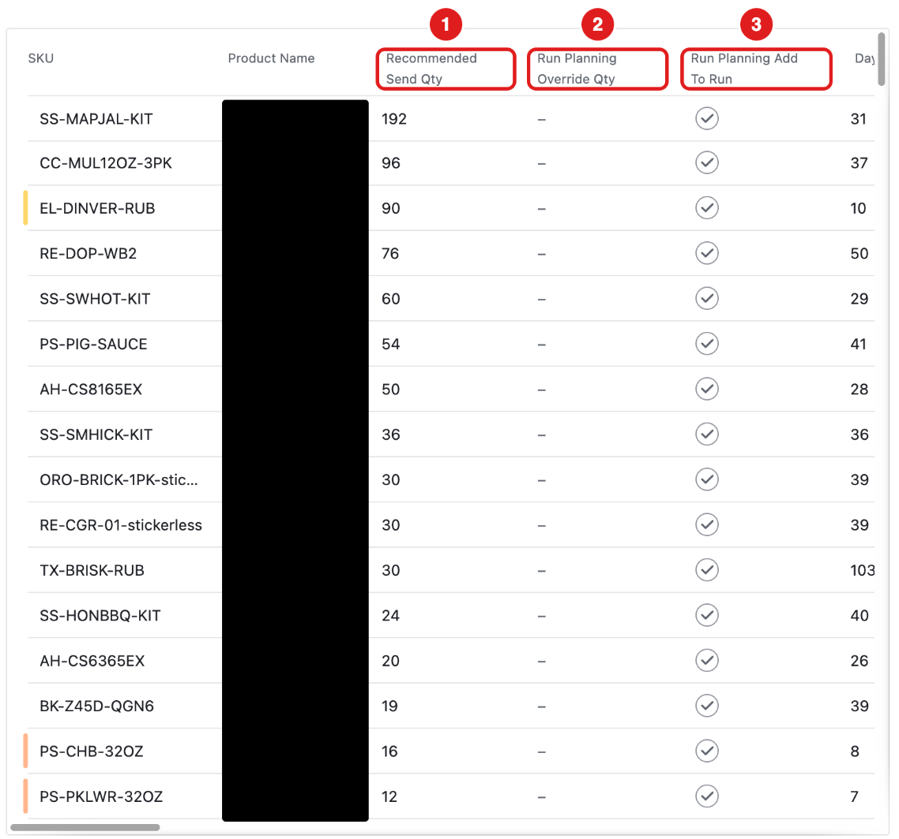
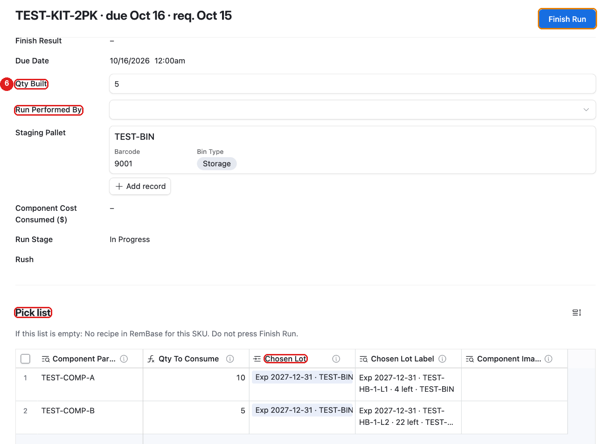
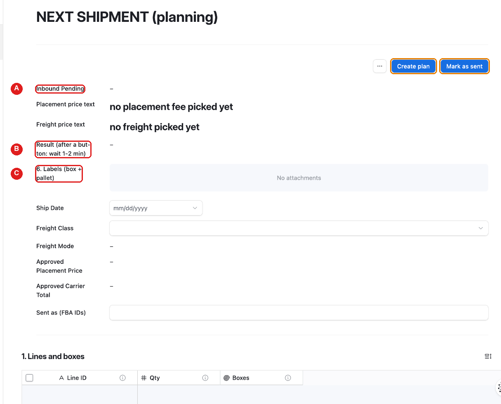

What is new next week
From the week of November 9, three things are real in RemBase:
- A production run. Becca sets it up. The warehouse builds it. The first one is on Wednesday, November 11.
- An Amazon pallet shipment. Chad or Sabith plan it, label it and send it in RemBase. Adam imports the transfer into Fishbowl.
- Bin counts with RemBase Scan. This is real already. Each count goes to Fishbowl by itself.
One system only. A run or a shipment you do in RemBase, you do not also do in Fishbowl. Never do the same work twice.
Everything else stays the same until December 1: other real work goes in Fishbowl.
A. Becca: set up a prep run, step by step
A prep run gets an item ready for Amazon (label, sticker). It has no recipe.
Prep runs are in RemBase from next week. Do not make them in Fishbowl.

First: open Run Planning – Commit and press Clear Run Planning once. This removes old ticks, so Commit makes only today’s runs.
- Click Run Planning in the menu. Find the product. Check Recommended Send Qty.
- To use your own number, type it in Run Planning Override Qty.
- Tick Run Planning Add To Run.
- Open Run Planning – Commit. Press Commit Run Planning once. Planned runs shows the new run.
- Click Production Run in the menu. Click the new run.
- Check Run Components. A prep run has one row: the product itself. (A run with a recipe shows its parts.) If Run Components is empty, stop and tell Adam.
- Check Chosen Lot on that row. RemBase chose the lot that expires first. The warehouse can choose another lot on the Floor page. If Chosen Lot is empty, there was no stock when you pressed Commit. The run cannot be finished until a lot is chosen.
- Date Needed (change if needed) is 7 days from today. Change it if needed. Do not leave it empty.
- If the run is urgent, tick Rush. Rush runs are at the top of the Floor page.
- Tick Build in RemBase (real) (under Rush). Only a ticked run can be finished for real. Never tick a run that was made in Fishbowl.
Do not make this run in Fishbowl (no work order). When the warehouse presses Finish Run, RemBase tells Fishbowl by itself.
A run with a recipe (a kit or a pack) has the same steps.
B. Warehouse: build the run and count
Build the run (Chad, Sabith):

Click Production Run - Floor in the menu. Rush runs are at the top.
Click the run. A real run shows Build in RemBase (real) ticked, under Rush. You cannot change it. A prep run shows one part in the Pick list: the product itself.
Read the Pick list: each part (Component Part SKU), how many to take (Qty To Consume), and which lot and bin (Chosen Lot Label). RemBase chose the lot that expires first. Take that lot from that bin. To take a different lot: tap the Chosen Lot box and pick the lot. Only lots of that part with stock show. The Pick list is empty? Do not press Finish Run. Tell Becca.
Build. Type the number you built in Qty Built. In Run Performed By, pick your name.
In Run Cartons, add one row for each box size: Boxes, Units Per Box, size and Weight Per Box (lb).
Press Finish Run once. Read Finish Result.
- DONE … – the run is finished. A prep run says DONE: Moved …: the items moved to the pallet.
- NOT DONE: … – nothing changed. Fix what it says. Press Finish Run again.
Finish Run may refuse. Then read Finish Result:
Finish Result says What to do choose the lot for: … That part has no lot (for example, none was in stock when the run was made). Choose a lot for it in Chosen Lot in the Pick list, or ask Becca. Then press Finish Run again. … Check the number. If it is right, ask the office to raise Qty Planned first. Qty Built is more than 110% of Qty Planned. Count again. If it is right, ask Becca to raise Qty Planned. this run has no Date Needed … Ask Becca to fill in Date Needed (change if needed). Then press Finish Run again. this run uses real parts … The run is not ticked Build in RemBase (real). Stop. Ask Becca. … the builds mirror is OFF … Stop. Tell Adam. Do not enter this run in Fishbowl.
See Production Run for more.
Count bins: use RemBase Scan, the same as now. Each count goes to Fishbowl by itself. A red box after a count means it waits for Becca or Adam: tap OK. See How to scan.
Receive deliveries: the same way as today. Adam tells you when receiving with RemBase Scan is on. To practice now, see Receive a delivery with RemBase Scan.
C. The pallet shipment to Amazon
Chad or Sabith do every step below. Adam imports the Fishbowl transfer file.
These buttons are real. Confirm placement and Confirm freight cost money. Press each button once. Then wait until Inbound Pending is empty (1-2 minutes).

The page parts have the same numbers as the steps below.
Open FBA Shipment → Next shipment. In 1. Lines and boxes, check the products, units and boxes.
In 2. Pallets, fill in each pallet: size, weight, “not stackable”.
Press Create plan (top of the page). Wait. Read Result (after a button: wait 1-2 min).
In 4. Pick a warehouse, then … > Confirm placement, check the Amazon warehouse choices and their fee. Then press … and Confirm placement.
In 5. Pick a carrier, then … > Confirm freight, check the carrier prices. Then press … and Confirm freight.
Print from 6. Labels (box + pallet):
- the file with box-labels in its name: one label on every box;
- the file with pallet-labels: four labels for each pallet, one on each side;
- the file with bill-of-lading (BOL): for the driver.
When the truck has left: press Mark as sent (top of the page) once. Read Mark Sent Result (under the Result line):
- SENT … – done. The next shipment is empty and ready.
- NOT DONE: no FBA shipment ID yet … – type the Amazon shipment ID in Sent as (FBA IDs). It starts with FBA. More than one: put a comma between them. Press Mark as sent again.
After Mark as sent, click FBA Shipment → Sent to Amazon. Click the shipment you just sent. Tick Export Transfer For Fishbowl once. Wait 5 minutes. The tick clears by itself. Read Fishbowl Transfer Note:
Fishbowl Transfer Note says What to do Exported … The file is in Fishbowl Transfer File. If Amazon split the shipment, there is one file for each FBA shipment ID. Tell Adam. CHECK the stock first (under Exported) The warehouse may not have enough. Tell Adam. NOT exported … No file was made. Tell Adam. The file could not be attached … Tick the box again in a few minutes. Adam imports each file in Fishbowl (Import > Transfer Order) and ships the transfer there. Do not make the transfer in Fishbowl yourself.
See FBA Shipment for each button.
Who to ask
Adam, for anything about next week’s run, shipment or counts.
If something looks wrong
- Stop. Do not press the button again.
- Do not do it in Fishbowl instead.
- Tell Adam: the page, the record, what you pressed and what you saw. A screenshot helps.